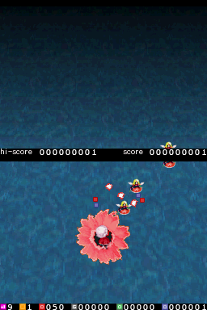

Menu
The menu has been restyled and a wifi config screen has been added.
Improved graphics
The backgrounds are now tilted backwards to give a nice 3d effect and the osd fonts finally have anti-aliasing. Enemies and projectiles can also be animated now.

Conversations
Support for conversations has been added to the level scripting language. The default game doesn't contain any conversations, but maybe someone else will make a game that uses them. You can specify a generic conversation with specialized conversations for specific characters.
New characters
Youmu and Yuka have been added to the default available characters.

Sakuya also gets a non-joke secondary bomb now:
Performance
Performance has been improved by 10-20%. Blue is before optimization, red after. Lower is better.